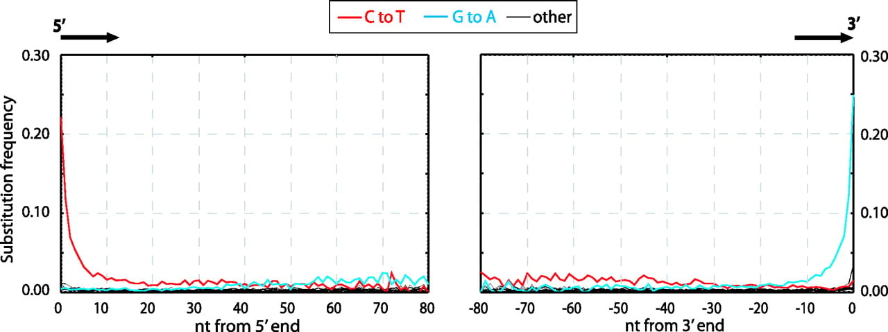

Introduction
What are damage patterns
Damage patterns on ancient DNA molecules occur due to increased miscoding lesions at the end of molecules. When DNA molecules start to decompose (i.e., repair mechanisms are lost once an organism dies), the very long DNA molecules start to fragment due to ‘nicks’ occurring on the sugar-phosphate of one of the strands, weakening the structure and causing the molecule to cleave into two. However, this cleavage is not necessarily ‘clean’, i.e., occurs on both strands at the same position. Rather, when the two uneven ‘nicks’ cause the DNA molecule to cleave into two, this results in a ‘jagged’ break - with the molecules having ‘overhangs’ of one strand being longer than the other of each of the new two now-‘independent’ molecules.
The resulting single-stranded overhangs leave the nitrogenous-bases ‘exposed’ on the overhang to the surrounding environment. In such cases, of the four nucleotides, it was found that cytosines undergo deamination at a higher rate than the others via hydrolysis. The loss of a cytosines amine group results in a nucleotide structure normally found more often in RNA molecules - uracils. The reason why palaeogenomicists report ‘C to T’ damage patterns is because some polymerases will misread uracils as an adenine, and will incorporate a thymine on the opposite strand during DNA amplification. During each subsequent amplification cycle, the mis-incorporated T will propagate across the subsequent copies of the original DNA molecule.
To summarise, the unequal ends of fragmented DNA molecules results in the increased chance of damage to the nucleotides to the overhangs. This structural damage occurs more frequently in cytosines over the other bases, however these ‘damaged’ cytosines are misread by polymerases during DNA amplification to result on thymines on the opposite strand (rather than the expected complementary guanines).
It is important to note that the library construction method will influence damage, e.g., is the library constructed from double-stranded DNA or single-stranded DNA, is the polymerase in the initial library amplification proof-reading or not, and so on. Throughout the rest of this book, each damage pattern will be described in the context of the library construction method of the data used to generate each damage pattern.
The increased frequency to C to T was detected at the end of molecules could only be detected with the invention of ‘Next Generation Sequencing’ or ‘NGS’ (Shendure and Ji 2008). NGS allowed palaeogenomicists to easily sequence thousands to millions of DNA molecules in one go in an untargeted manner, which subsequently meant that molecules from across entire genomes could be compared against a reference genome. Bioinformaticially, the increase of C to T miscoding lesions were detected by measuring the frequency of mutations at each position across each read, where each read was derived from a different place on the reference genome. As many different places across the reference genome would have different base composition, one would expect to see an approximately random distribution of mutations across the genome. However it was observed in Neanderthals DNA libraries that the frequency of C to T mutation in the first ~10 base pairs of the 5p end of double-stranded library molecules had a higher frequency than the expected approximate equal distribution across each type of mutation, as seen in Figure 1.

How are damage patterns analysed
There is a range of software that can generate damage pattern plots from ancient DNA NGS libraries. The vast majority of tools require to be of sequencing reads aligned to a reference genome or genomes. Here we make suggestions of some tools that you can use to generate such plots. The example damage patterns in this book will mostly be derived from genomics tools, as metagenomic damage plot generation may account for other factors than the ‘classical’ ancient DNA damage plot.
Genomics
These tools generally take BAM files as input (i.e., after mapping of FASTQ files to a reference genome using a short-read aligner):
- mapDamage
- Source: https://github.com/ginolhac/mapDamagee
- Documentation: https://ginolhac.github.io/mapDamage
- Citation: (Jónsson et al. 2013)
- PMDtools
- Source: https://github.com/pontussk/PMDtools
- Documentation: https://github.com/pontussk/PMDtools
- Citation: (Skoglund et al. 2014)
- DamageProfiler
- Source: https://github.com/Integrative-Transcriptomics/DamageProfiler
- Documentation: https://damageprofiler.readthedocs.io/en/latest/
- Citation: (Neukamm, Peltzer, and Nieselt 2021)
Metagenomics
These tools may take different approaches to generating their alignments (or even alignment free methods).
- MaltExtract
- Source: https://github.com/rhuebler/MaltExtract
- Documentation: https://github.com/rhuebler/MaltExtract
- Citation: (Hübler et al. 2019)
- pyDamage
- Source: https://github.com/maxibor/pydamage
- Documentation: https://pydamage.readthedocs.io/en/0.7/
- Citation: (Borry et al. 2021)
- MetaDMG
- Source: https://github.com/metaDMG-dev/metaDMG-core
- Documentation: https://metadmg-dev.github.io/metaDMG-core/
- Citation: (Michelsen et al. 2022)